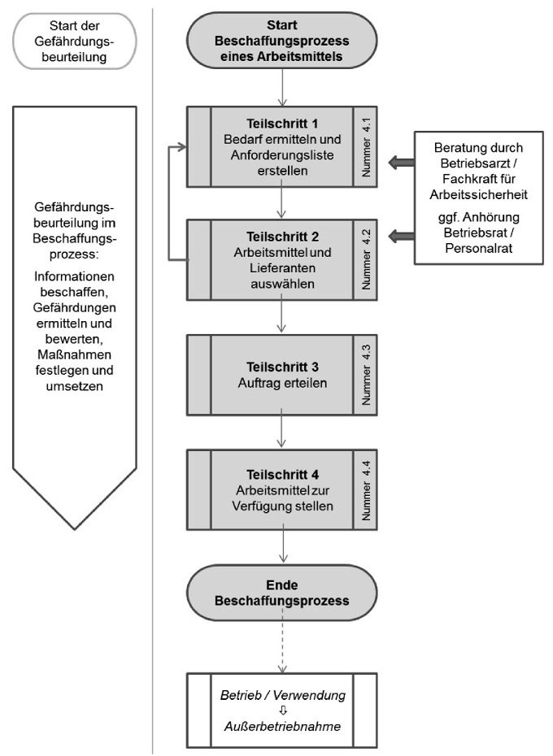
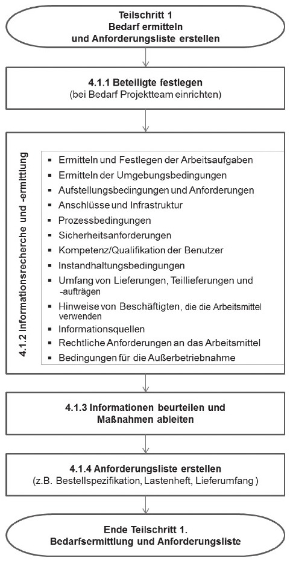
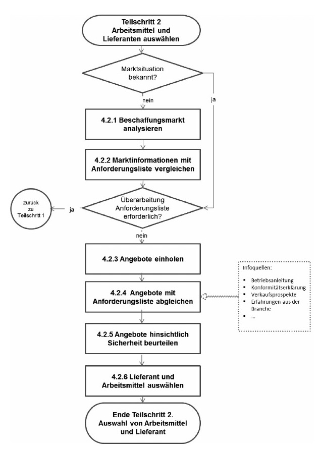
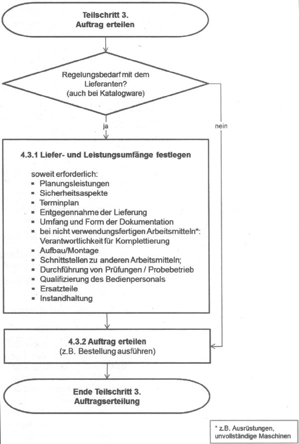
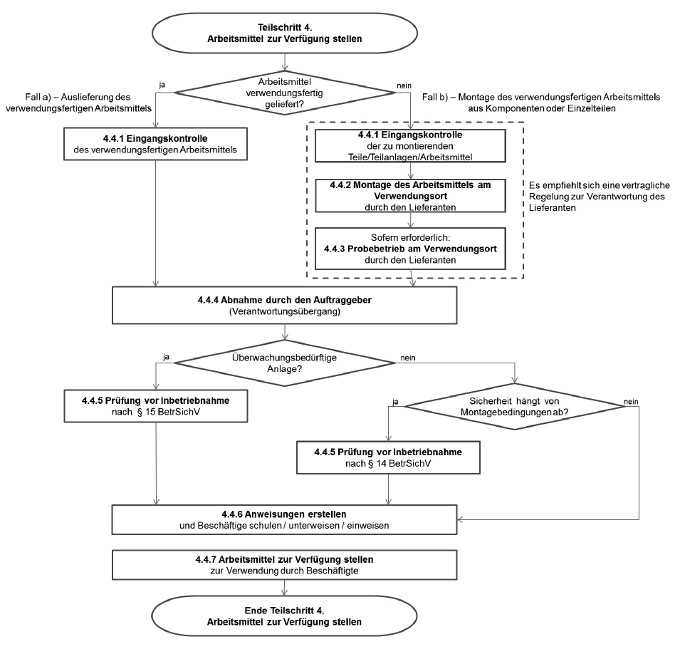

(1) Der Prozess der Beschaffung sicherer und geeigneter Arbeitsmittel lässt sich in vier Teilschritte einteilen:
(2) Für Arbeitsmittel sind die Auswirkungen der am Arbeitsplatz gegebenen Bedingungen auf die Sicherheit und den Gesundheitsschutz im Rahmen einer Gefährdungsbeurteilung zu ermitteln (§ 3 BetrSichV). Gemäß § 3 Absatz 3 BetrSichV soll die Gefährdungsbeurteilung bereits vor der Auswahl und der Beschaffung der Arbeitsmittel begonnen werden. Um falsche Beschaffungsentscheidungen zu vermeiden, empfiehlt sich, die Gefährdungsbeurteilung in den Beschaffungsprozess zu integrieren und mit diesem gemeinsam zu starten.
Eine Übersichtsdarstellung des Beschaffungsprozesses enthält Abbildung 1.

Abb. 1 Übersichtsdarstellung des Beschaffungsprozesses
(1) Der Auftraggeber hat nach § 3 BetrSichV als Teil der Gefährdungsbeurteilung nach § 5 ArbSchG durch eine Beurteilung der für die Beschäftigten mit ihrer Arbeit verbundenen Gefährdung zu ermitteln, welche Maßnahmen des Arbeitsschutzes erforderlich sind und daraus geeignete Schutzmaßnahmen abzuleiten. Eine Gefährdung kann sich insbesondere durch die Gestaltung, die Auswahl und den Einsatz von Arbeitsmitteln sowie den Umgang damit, die Gestaltung von Arbeits- und Fertigungsverfahren, Arbeitsabläufen und Arbeitszeit und deren Zusammenwirken sowie unzureichende Qualifikation und Unterweisung der Beschäftigten ergeben.
(2) Die Gefährdungsbeurteilung nach § 3 BetrSichV berücksichtigt sowohl die Eignung, die Beschaffenheit, die Verwendung eines Arbeitsmittels sowie alle sonstigen Aspekte, die zu einer Gefährdung von Beschäftigten führen können, z. B. Eigenschaften der Arbeitsgegenstände und der Arbeitsumgebung sowie die Arbeitsabläufe. Durch die Verknüpfung der Gefährdungsbeurteilung mit allen Prozessschritten der Beschaffung von Arbeitsmitteln wird sichergestellt, dass Maßnahmen mit dem Ziel geplant werden, Technik, Arbeitsorganisation und sonstige Arbeitsbedingungen sachgerecht zu verknüpfen. Die Konkretisierung des Bedarfs und der Anforderungen an ein Arbeitsmittel ist daher gleichzeitig ein erster Teilschritt der Gefährdungsbeurteilung.
(3) Das Bereitstellen von Produkten auf dem Markt wird durch das Produktsicherheitsgesetz geregelt. Der Arbeitgeber darf nur solche Arbeitsmittel zur Verfügung stellen und verwenden lassen, die neben den Vorschriften dieser Verordnung, insbesondere Rechtsvorschriften, mit denen Gemeinschaftsrichtlinien in deutsches Recht umgesetzt wurden, entsprechen und die für die Arbeitsmittel zum Zeitpunkt des Bereitstellens auf dem Markt gelten. Dies gilt sowohl für neue als auch für gebrauchte Produkte. Arbeitsmittel, die der Arbeitgeber für eigene Zwecke selbst hergestellt hat, müssen den grundlegenden Sicherheitsanforderungen der anzuwendenden Gemeinschaftsrichtlinien entsprechen. Den formalen Anforderungen dieser Richtlinien brauchen sie nicht zu entsprechen, es sei denn, es ist in der jeweiligen Richtlinie ausdrücklich anders bestimmt. Damit ist der Auftraggeber für die Einhaltung der Anforderungen an die Verwendung von Arbeitsmitteln im Betrieb verantwortlich. Der Auftraggeber muss im Rahmen der Gefährdungsbeurteilung prüfen, ob die Sicherheit bei der Verwendung auch unter den betrieblich gegebenen Umgebungsbedingungen ausreicht oder ergänzt werden muss. Das Vorhandensein einer CE-Kennzeichnung am Arbeitsmittel entbindet den Auftraggeber nicht von der Pflicht, die notwendigen Maßnahmen für die sichere Verwendung der Arbeitsmittel zu ermitteln und zu treffen. Dabei gilt das T-O-P-Prinzip mit der Rangfolge ihrer Maßnahmen gemäß § 4 Absatz 2 Satz 2 BetrSichV. Danach haben technische Schutzmaßnahmen Vorrang vor organisatorischen, diese haben wiederum Vorrang vor personenbezogenen Schutzmaßnahmen.
(4) In gleicher Weise wird vorgegangen, wenn der Auftraggeber Eigenhersteller eines Arbeitsmittels ist. Hier ist bei der Ermittlung der erforderlichen Anforderungen an das Arbeitsmittel im ersten Teilschritt der Gefährdungsbeurteilung zunächst die Frage zu klären, ob er z. B. aufgrund einer Verordnung zum Produktsicherheitsgesetz Pflichten des Herstellers, wie die Durchführung und Dokumentation des eventuell erforderlichen KonformitätsbewertungsverfahKonformitätsbewertungsverfahrens, zu erfüllen hat. Darüber hinaus hat er sicherzustellen, dass auch selbst hergestellte Arbeitsmittel für die am Arbeitsplatz gegebenen Bedingungen geeignet und dass bei deren Verwendung Sicherheit und Gesundheitsschutz der Beschäftigten gewährleistet sind.
Der Teilschritt 1 lässt sich in folgende Unterschritte gliedern (vgl. Abbildung 2):
Im ersten Schritt wird festgelegt, wer bei der Beschaffung beteiligt werden soll bzw. beteiligt werden muss (z. B. Fachkraft für Arbeitssicherheit, Betriebsarzt, Benutzer etc.). Kriterien für die Auswahl des zu beteiligenden Personenkreises sind z. B.:
(1) Auf der Grundlage der vorliegenden Informationen aus Nummer 4.1.2 ist zu beurteilen, welche Maßnahmen erforderlich sind, um am besten den Zielen des Arbeitsschutzes zu entsprechen (Beachtung von § 3 BetrSichV, des T-O-P-Prinzips gemäß § 4 Absatz 2 Satz 2 BetrSichV und der ergonomischen und alters- und alternsgerechten Verwendung von Arbeitsmitteln).
(2) Hinsichtlich der Verwendung von Schutzeinrichtungen an Maschinen empfiehlt sich, ein Sicherheits- und Bedienkonzept zu erstellen, durch welches der Anreiz zur Manipulation von Schutzeinrichtungen vermieden wird.
Es ist eine Anforderungsliste unter Berücksichtigung der rechtlichen Anforderungen zu erstellen, in die neben anderen Anforderungen alle produktseitigen Anforderungen aus der Sicht des Arbeitsschutzes integriert sind. Dabei sind die unter Nummer 4.1.3 ermittelten Maßnahmen handlungsleitend. In einfachen Fällen („Katalogware“) ist eine angemessene Präzisierung der Bestellung unter Berücksichtigung von relevanten Ausstattungsoptionen ausreichend. In komplexen Fällen werden entsprechende Lastenhefte/Bestellspezifikationen erstellt, anhand derer die Auftragnehmer ihre Produkte unter Berücksichtigung der rechtlichen Anforderungen herstellen können und die Planungs-, Beschaffungs-, Montage-, Bau- und anderen Ingenieur-Dienstleistungen vergeben werden.
Eine Darstellung des Teilschritts 1 enthält die Abbildung 2.

Abb. 2 Teilschritt 1 – Bedarf und Anforderungen ermitteln
Die Analyse des Beschaffungsmarktes ist grundsätzlich unabhängig davon, ob es sich um die Beschaffung von Katalogware oder spezifisch angefertigter Arbeitsmittel handelt. Sie dient zunächst dazu, potentielle Hersteller, Arbeitsmittel und Lieferanten zu identifizieren. Sie kann gleichzeitig eine Innovationsfunktion übernehmen, indem Informationen über neue Entwicklungen u. a. hinsichtlich Funktionalität, Sicherheit und Ergonomie bei Produkten für die anstehende Arbeitsaufgabe gewonnen werden.
Die Marktinformationen können eine Überarbeitung der Anforderungsliste sinnvoll machen. Gleiches gilt, wenn bei der Marktanalyse deutlich wird, dass keine Arbeitsmittel mit den geforderten Anforderungen zur Verfügung stehen oder relevante Anforderungen in der Anforderungsliste noch zu berücksichtigen sind.
Auf die Analyse des Beschaffungsmarkts folgt die Angebotseinholung/ Ausschreibung auf der Grundlage der in Teilschritt 1 erstellten Anforderungsliste. Bei einfachen Produkten wird dieser Schritt teilweise zusammen mit dem vorherigen Schritt abgehandelt.
Die angebotenen Arbeitsmittel und Leistungen werden analysiert und mit der Anforderungsliste abgeglichen. Unterschiede in den Angeboten werden herausgearbeitet und bewertet.
(1) Es erfolgt eine Beurteilung, ob die angebotenen Arbeitsmittel den Sicherheits- und Gesundheitsschutzanforderungen entsprechen. Anerkannte Drittprüfungen (z. B. Prüfzeichen wie das GS-Zeichen) können eine gute Hilfestellung bieten.
(2) Wichtige Informationsquellen sind
Auf dieser Basis können Arbeitsmittel (Hersteller, Typ, Zubehör) und Lieferanten ausgewählt werden.
Eine Darstellung des Teilschritts 2 enthält die Abbildung 3.

Abb. 3 Teilschritt 2 – Auswahl von Arbeitsmittel und Lieferant
(1) Bei der Erteilung des Auftrags zur Lieferung eines Arbeitsmittels und damit ggf. verbundener Leistungen wird geprüft, welche Liefer- und Leistungsumfänge mit dem bzw. den Lieferanten oder Auftragnehmern festzulegen sind.
(2) Der zu vereinbarende Liefer- und Leistungsumfang wird mit der Anforderungsliste abgeglichen. Zusätzliche Festlegungen können erforderlich sein in Hinblick auf:
(1) Für jede erforderliche Maßnahme empfiehlt es sich, die Zuständigkeit und den Liefer-/Leistungsumfang als Bestandteil der Bestellung schriftlich festzuhalten. Weiterhin empfiehlt es sich, den Zeitpunkt des Verantwortungsübergangs vom Lieferanten auf den Arbeitsgeber im Vorfeld abzustimmen. Dies gilt insbesondere bei der Montage von Arbeitsmitteln am Verwendungsort.
(2) Weiterhin hat der Auftraggeber dem Auftragnehmer schriftlich aufzugeben, bei der Lieferung von Arbeitsmitteln, Ausrüstungen oder Arbeitsstoffen die für Sicherheit und Gesundheitsschutz einschlägigen Anforderungen im Rahmen seines Auftrags einzuhalten (vgl. auch § 5 Absatz 1 und 2 DGUV Vorschrift 1).
(3) Alle an der Montage und Inbetriebsetzung eines Arbeitsmittels am Verwendungsort beteiligten Arbeitgeber, wie der Auftraggeber, der Hersteller oder ggf. weitere Auftragnehmer und Kontraktoren, sind für die Sicherheit und den Gesundheitsschutz ihrer Beschäftigten am Verwendungsort verantwortlich.
(4) Die beteiligten Arbeitgeber sind verpflichtet, bei der Durchführung der Sicherheits- und Gesundheitsschutzbestimmungen zusammenzuarbeiten (§ 13 BetrSichV). Soweit dies für die Sicherheit und den Gesundheitsschutz der Beschäftigten bei der Arbeit erforderlich ist, haben die Arbeitgeber je nach Art der Tätigkeiten insbesondere sich gegenseitig und ihre Beschäftigten über die mit den Arbeiten verbundenen Gefahren für Sicherheit und Gesundheit der Beschäftigten zu unterrichten und Maßnahmen zur Verhütung dieser Gefahren abzustimmen.
(5) Der Arbeitgeber, unter dessen Verantwortung die Montage stattfindet, und der Arbeitgeber, in dessen Betrieb die Montage stattfindet, müssen die erforderlichen Schutzmaßnahmen koordinieren. Bei der Koordination muss je nach Art der Tätigkeit sichergestellt werden, dass die Beschäftigten anderer Arbeitgeber, die bei der Inbetriebsetzung tätig werden, hinsichtlich der Gefahren für ihre Sicherheit und Gesundheit während ihrer Tätigkeit angemessene Anweisungen erhalten haben. Dies gilt insbesondere dann, wenn die für den sicheren Betrieb erforderlichen Einrichtungen und Maßnahmen noch nicht in vollem Umfang wirksam sind. Dabei sind die einzelnen Folgeschritte bei der Inbetriebsetzung zu berücksichtigen.
(6) Besteht bei der Zusammenarbeit mehrerer Unternehmen und bei der Verwendung von Arbeitsmitteln eine erhöhte Gefährdung von Beschäftigten anderer Arbeitgeber, ist für die Abstimmung der jeweils erforderlichen Schutzmaßnahmen durch die beteiligten Arbeitgeber ein Koordinator/eine Koordinatorin schriftlich zu bestellen (§ 13 BetrSichV). Die Arbeitgeber haben dafür zu sorgen, dass die entsprechenden Maßnahmen, insbesondere Zusatzmaßnahmen für den Probebetrieb, getroffen werden. Regelungen in anderen Rechtsbereichen (z. B. Baustellenverordnung, Bundes-Immissionsschutzgesetz [BImSchG]) bleiben davon unberührt.
Eine Darstellung des Teilschritts 3 enthält die Abbildung 4.

Abb. 4 Teilschritt 3 – Auftrag erteilen
(1) Die Gewährleistung von Sicherheit und Gesundheit der Beschäftigten oder anderer Personen im Gefahrenbereich bei der Beschaffung von Arbeitsmitteln ergibt sich als Kombination
Ein Lieferant kann ein Hersteller oder ein anderer Wirtschaftsakteur sein.
(2) Der Verantwortungsübergang zwischen dem Lieferanten und dem Auftraggeber kann unterschiedlich gestaltet sein. Zwei exemplarische Ausprägungen werden im Folgenden dargestellt (siehe Abbildung 5):
(3) Mit dem Verantwortungsübergang geht die Verantwortung für das unter seinem Namen auf dem Markt bereitgestellte Arbeitsmittel vom Lieferanten auf den Auftraggeber über.
(4) Für die Aufstellung eines Arbeitsmittels hat der Auftraggeber am Verwendungsort alle notwendigen Voraussetzungen zu schaffen. Solche Voraussetzungen sind z. B. Bau, Stahlbau, Fundamente, Zugänglichkeit, Zugang, Sicherheitsabstände, sichere Zuführung von Energien und Medien an die Liefergrenzen.
(1) Mit einer Eingangskontrolle stellt der Auftraggeber sicher, dass die richtigen Produkte vollständig, spezifikationsgemäß und mängelfrei geliefert wurden (formaler Vergleich Bestellung – Auslieferung).
(2) Hierzu sind die Mängel in einem angemessenen Zeitraum (siehe hierzu auch Artikel 38 und 39 UN-Kaufrecht, § 377 Absatz 1 HGB), in dem diese hätten festgestellt werden können, dem Lieferanten mitzuteilen. Die allgemeine Pflicht des Käufers, ein geliefertes Arbeitsmittel unverzüglich nach dem Erhalt zu untersuchen und erkennbare Mängel dem Verkäufer zu melden, schließt die Rüge von Sicherheitsmängeln ein.
(1) Je nach Auftragsgestaltung/Auftragsumfang kann es bei der Montage eines Arbeitsmittels mehrere Lieferanten geben. Für den Auftraggeber empfiehlt es sich, die Zuständigkeiten in diesen Fällen vertraglich eindeutig zu regeln.
(2) Bei Arbeitsmitteln, die am Verwendungsort montiert werden, ist nach Abschluss der Montage, der mechanischen Fertigstellung und nach Herstellung der Betriebsbereitschaft aller Systeme und Hilfssysteme zu überprüfen, ob alle notwendigen Arbeiten und Leistungen erbracht wurden und alle Systeme, Komponenten spezifikationsgerecht und gemäß Vorgabe ausgeführt, eingebaut und betriebsbereit sind sowie die Dokumentation vorhanden ist.
Vor Auslieferung oder nach der Montage am Verwendungsort empfiehlt sich ein Probebetrieb durch den Lieferanten.
(1) Die Abnahme durch den Auftraggeber erfolgt, wenn die vertraglich geforderten Lieferungen und Leistungen durch den Lieferanten erbracht wurden. Mit dem Verantwortungsübergang geht die Verantwortung für das unter seinem Namen auf dem Markt bereitgestellte Arbeitsmittel vom Lieferant auf den Auftraggeber über.
(2) Am Ende des Beschaffungsprozesses findet ein Abgleich statt, ob alle erforderlichen, gemäß Abschnitt 4.1.3 festgelegten Maßnahmen vollständig und richtig umgesetzt sind. Dies beinhaltet
Bei Arbeitsmitteln, deren Sicherheit von den Montagebedingungen abhängt und bei überwachungsbedürftigen Anlagen ist nach der Montage und vor der ersten Inbetriebnahme eine Prüfung durch eine zur Prüfung befähigte Person oder eine zugelassene Überwachungsstelle (ZÜS) durchzuführen. Diese Prüfung hat den Zweck, sich von der ordnungsgemäßen Montage und Installation, dem ordnungsgemäßen Zustand und der sicheren Funktion der Arbeitsmittel zu überzeugen. Prüfinhalte, die im Rahmen eines Konformitätsbewertungsverfahrens geprüft und dokumentiert wurden, müssen nicht erneut geprüft werden. Die Verantwortung dafür, dass die Prüfung durchgeführt wird, liegt beim Auftraggeber.
Vor der Verwendung eines Arbeitsmittels im Betrieb sind alle erforderlichen Anweisungen (z. B. Arbeits- und Betriebsanweisungen) zu erstellen. Danach hat die abschließende Qualifizierung, Einarbeitung und Unterweisung der Beschäftigten zu erfolgen.
Sind alle in Absatz 1 genannten Schritte abgearbeitet, darf das Arbeitsmittel den Beschäftigten zur Verwendung zur Verfügung gestellt werden.
Eine Darstellung des Teilschritts 4 enthält die Abbildung 5.

Abb. 5 Teilschritt 4 – Arbeitsmittel zur Verfügung stellen